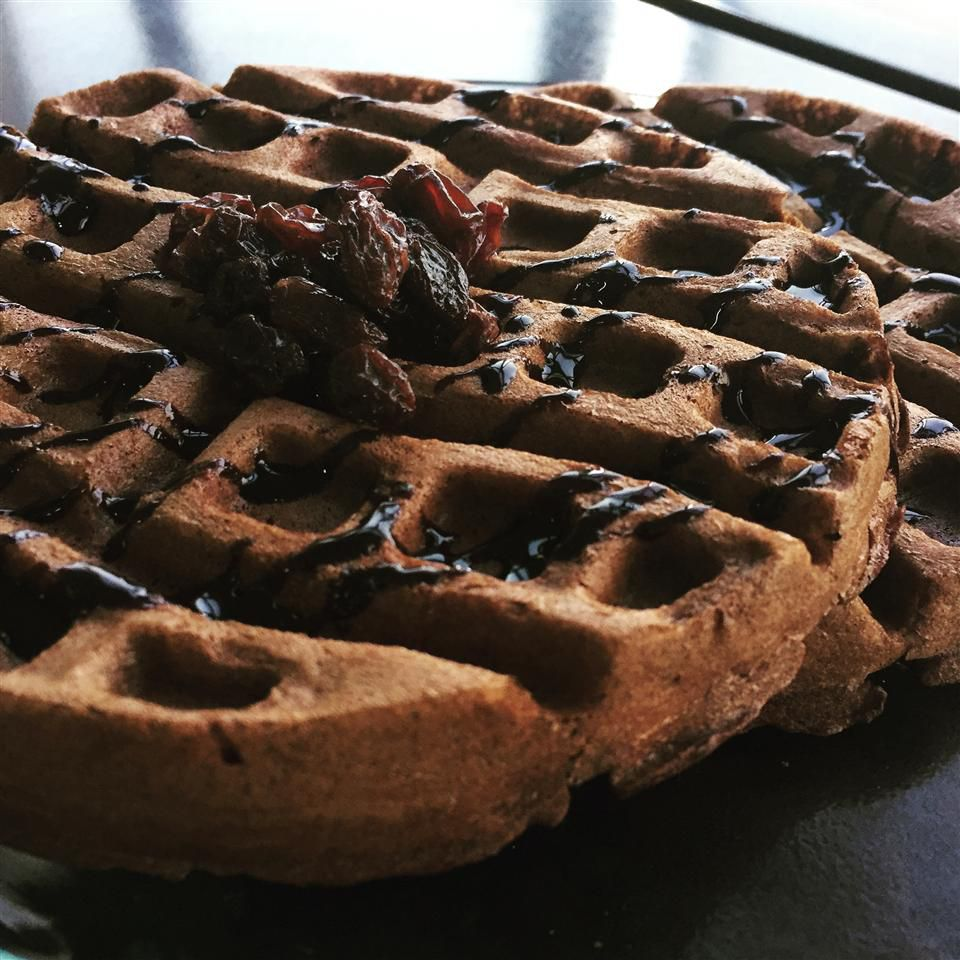

Chocolate Waffles

Description
This is the recipe for making a chocolate waffle, a delicious, sweet treat that both adults and kids can enjoy! Everyone loves waffles, why not add a little flair to them by cooking them in chocolate
This recipe has been compiled to be the easiest possible, so that anyone can make it at home. Enjoy!
Ingredients
Waffles
- One and a half cups all-purpose flour
- half a cup white sugar
- 3 tablespoons unsweetened cocoa powder
- 3 teaspoons baking powder
- half teaspoon salt
- 1 cup milk
- 2 large eggs
- 4 tablespoons butter, melted
Hard Sauce
- 1 tablespoon butter, softened
- 3/4ths cup confectioner's sugar
- 1/2 teaspoon vanilla extract
- 1 teaspoon milk
Other
Steps
- Preheat a waffle iron
- Make waffles: Stir together flour, sugar, cocoa, baking powder and salt in a large mixing bowl. Stil in milk, eggs, and butter until the mixture is smooth.
- Make hard sauce: stir together softened butter, confectioner's sugar, vanialla extract, and milk. Sauce should be fairly stiff. Set aside.
- Spray preheated waffle iron with nonstick cooking spray. Pour waffle mix onto hot waffle iron. Cook until golden brown. Serve hot with hard sauce.